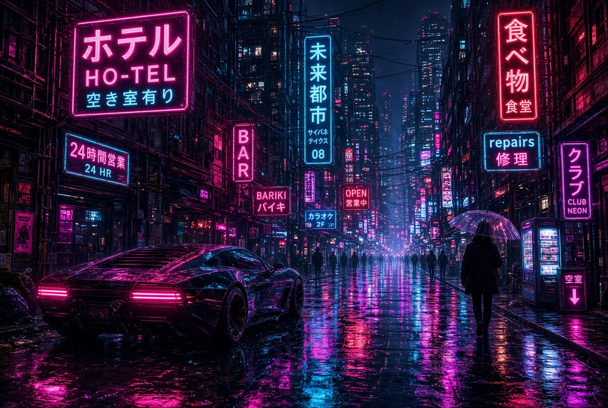
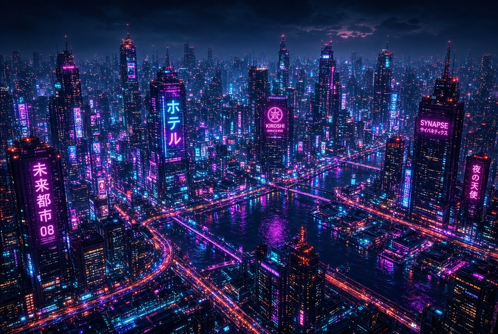
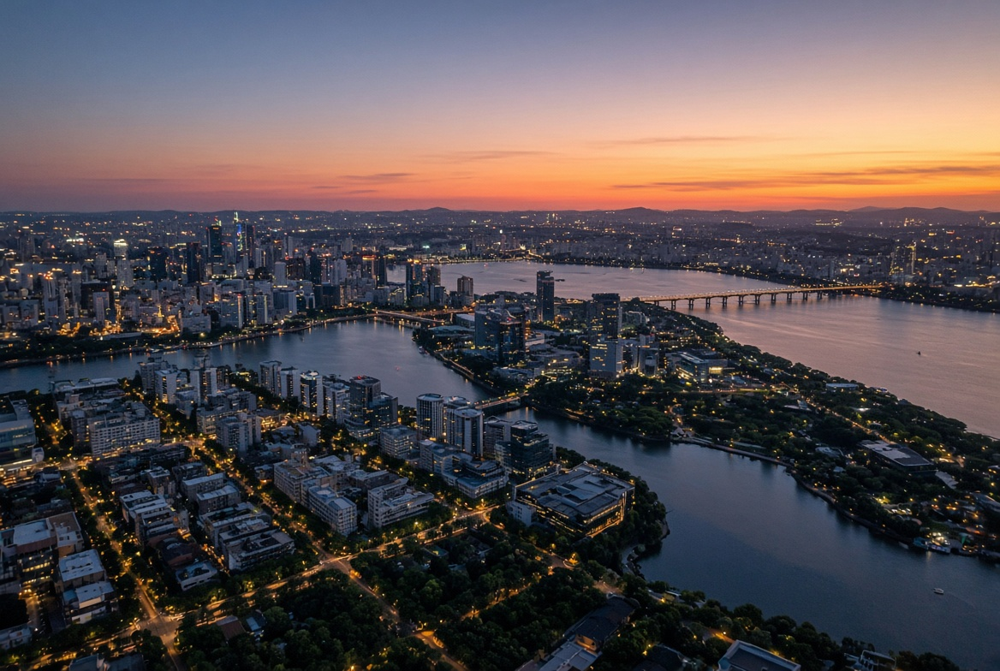

Deszczowa noc na głównej alei
NPC wracają z pracy. Neony odbijają się w mokrym asfalcie.
Kroniki codzienności. Obrazy, historie, zdarzenia NPC.

NPC wracają z pracy. Neony odbijają się w mokrym asfalcie.

Zarządcy zaczynają zajmować strefy. Żadnych misji — tylko życie.

Miasto zaczyna jako jeden organizm. Z czasem przerodzi się w kraj.